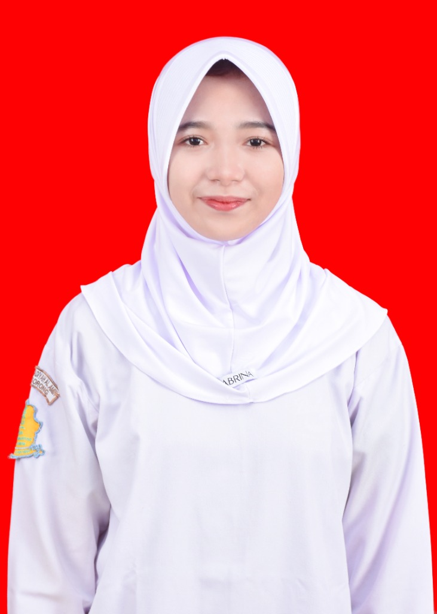

Mengenal lebih dekat latar belakang akademik, profil pribadi, dan rencana masa depan
Standar ukuran pasfoto akademik

Ukuran 4x6 (160 x 240 px)
Ukuran 3x4 (120 x 160 px)
| Nama Lengkap | : | Vania Veronica (Nia) |
| Program Studi / Jurusan | : | Teknik Komputer |
| Kelas / Angkatan | : | Tekom C 2025 |
| Mata Kuliah | : | Pemrograman Web |
| Email Resmi | : | vaniaveronica0301@gmail.com |
| Nomor Kontak / WA | : | 082260950451 |
| Minat & Keahlian | : | Web Development (HTML/CSS), UI Design, Computer Networking |
Sebagai mahasiswa Teknik Komputer yang sedang mendalami teknologi web, berikut adalah roadmap dan pencapaian yang ditargetkan dalam 2 hingga 3 tahun ke depan:
Menguasai dasar-dasar web modern mulai dari HTML5, CSS3 lanjutan (Flexbox, Grid, Animasi), JavaScript ES6+, hingga framework backend seperti Node.js atau PHP/Laravel untuk membangun aplikasi web dinamis berskala penuh.
Menyelesaikan minimal 5 proyek web nyata, aktif berkontribusi di GitHub, mengikuti sertifikasi profesional bidang web development, dan membangun sistem informasi yang bermanfaat untuk masyarakat atau institusi.
Mengikuti program magang (internship) di perusahaan teknologi terkemuka sebagai Frontend Engineer atau Fullstack Developer, serta mempersiapkan kelulusan tugas akhir di bidang teknologi komputer dengan predikat memuaskan.